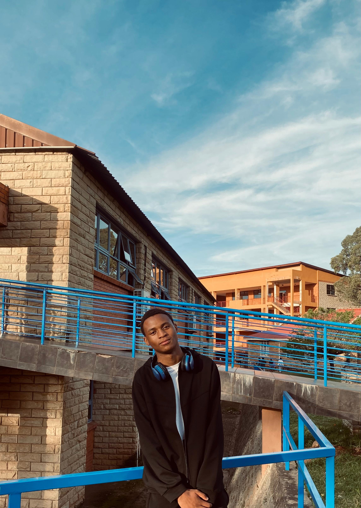
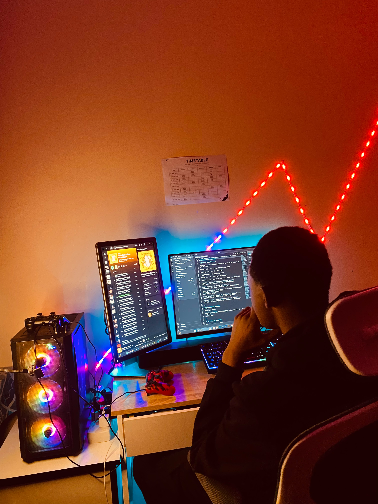

More ways to earn
People can access additional income-generating opportunities through tasks that match their time and abilities.
A little about me. A lot about an idea worth building.
Computer Science Student · Software Developer · Founder
I'm a computer science student and developer from Lesotho, interested in building technology that responds to real, everyday problems. One of those problems led me to create QuickConnect LS.

A gap hiding in everyday life
Sometimes, you don't need to hire someone permanently. You just need a helping hand.
You might need someone to clean your yard, tend to your garden, wash clothes, move furniture, run an errand or help with a task at your business. The work is real, but the need may only last a few hours or a day.
Finding someone for these jobs often means asking around, relying on word of mouth or contacting people you already know. At the same time, people willing to do this kind of work can struggle to find clients and accessible ways to earn.
A home, room, yard or outdoor space needs attention.
A garden needs maintenance, without a permanent hire.
You need an extra pair of hands for a short job.
Errands, washing, deliveries and other practical tasks.
This isn't the same as recruiting a full-time employee. It's about finding help for work that needs doing now.
Introducing
Everyday work. Easier to find.
QuickConnect LS is a platform that connects clients who need tasks completed with individuals looking for work opportunities.
Clients post the work they need done. Workers can discover opportunities and offer their services. The client chooses and hires a worker for the task.
Visit QuickConnect LS ↗ CONNECTING EVERYDAY NEEDS WITH PEOPLE READY TO WORK
CONNECTING EVERYDAY NEEDS WITH PEOPLE READY TO WORK
Describe the help you need, where and when you need it.
Discover available tasks and offer your time and services.
Access people available for household tasks, short-term assistance and everyday business needs.
Make your time, effort and abilities available to people who need a task completed.
Bring task listings and people looking for work into one accessible place.
More than getting a task done
Behind every small task is a need. And behind every completed task is someone who had an opportunity to earn.
People can access additional income-generating opportunities through tasks that match their time and abilities.
Households and small businesses have another way to find people for practical, short-term work.
Everyday services and temporary tasks become easier to discover instead of depending only on personal networks.
More connections between people who need help and people ready to provide it can support activity in local communities.
Make it easier for people to find work, and easier for people to find help.
Designed for accessibility and sustainability
QuickConnect LS is designed around low-cost access for both sides of the marketplace, with additional revenue linked to activity on the platform.
A small subscription for clients who want to post tasks and find help.
A nominal subscription for workers who want to access available opportunities.
A commission on transactions facilitated through the platform.
Relevant advertising and business promotions provide an additional revenue stream.
Pricing shown in Lesotho loti (LSL). Fees and transaction arrangements are subject to the platform's published terms.
Progress worth sharing
QuickConnect LS received LSL 18,000 in support through the UNDP STEAM initiative to help advance the project.
Advanced through multiple selection stages and achieved fourth place in the competition, from an initial pool of approximately 1,500 applicants.
Taking part in a regional space to exchange ideas, connect with fellow innovators and explore opportunities for collaboration and growth.

The person behind the project
I'm Topollo Nts'eo, a Computer Science student, software developer and technology innovator from Lesotho.
My interest in technology goes beyond writing code. I'm interested in understanding the problems people face and exploring how digital tools can make practical differences in their lives.
QuickConnect LS grew from that way of thinking: noticing a gap in how people find help for everyday tasks, and how people looking for this kind of work find clients.
I'm continuing to develop my skills in software and web development while exploring the possibilities of emerging technologies, including artificial intelligence. My long-term ambition is to build useful solutions that can grow beyond borders and contribute to Africa's technology ecosystem.
Ideas move forward through people
I'm open to conversations with fellow innovators, entrepreneurs, potential partners, organisations and anyone interested in making everyday opportunities more accessible.